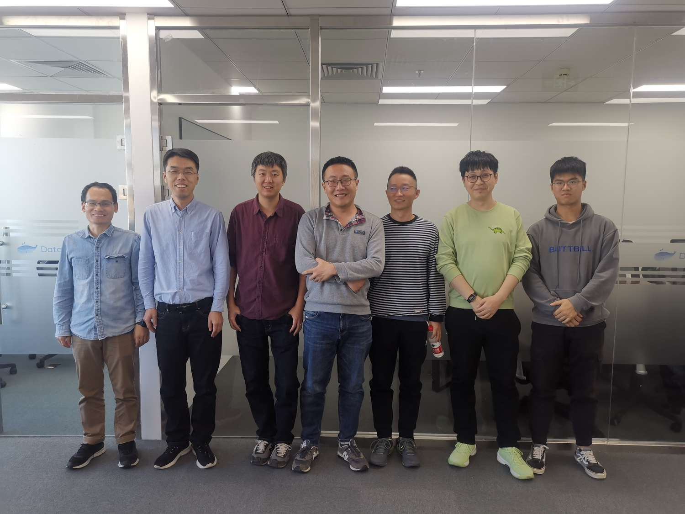

2022总结
竟然又到了年底了，2022又过去了，今年是非常充实忙碌的一年，总体来说就是秋招+毕业两件大事，想想去年的这个时候是2021年底，刚刚翻看之前的总结又感叹着时间飞逝，自己又老了一岁…今年的年度总结多了一个复盘环节：流水账，复盘，good stuff and bad stuff。
流水账
今年年初回家很早，元旦的时候应该就在家里，在家呆了两个月，这两个月里面还是主要在给 databend 实习写代码。回忆起来，在几家公司的实习经历里面，自己最喜欢也是呆的最舒服的就是在 databend 了，还记得当时每天早上起来坐地铁去奥森的办公室，最开始去的时候办公室才刚刚弄好，然后基本上也没什么人，大部分时间也就是和虎哥、wangyin哥以及yijun，xp哥和f叔有时候会来。还记得有一张非常青涩的合影，在这里实习也非常开心。大部分时间每天就去楼下吃字节的食堂，偶尔也会去吃吃其他的饺子或者是面啥的。不论有啥问题都可以随时去找虎哥和其他的几个大佬一起请教和讨论，写代码的效率也很高。在这个经历中，最应该感谢的人就是虎哥和sundy哥了，虎哥把我拉过去让我能够在 databend 实习，非常喜欢虎哥待人的方式，没有一点架子，对人也非常热情非常开放，如果以后还有机会还想跟着虎哥做；sundy哥在我的整个实习过程中帮助了我非常多，sundy是我遇到的最好的导师或者叫mentor了，技术非常强的同时也非常会带人，也非常愿意把好的活交给实习生来做，后来也一直请教了他很多问题。
希望 databend 发展越来越好！
另外就是在这个寒假终于把驾照考完了，拖了好久的驾照终于拿到手了！
然后到了三月，这个时候大概停了一个月的实习，开始写简历刷题开始找实习，当时也面了好几家公司，不过很早就拿到了当时非常想去的阿里云的 polar-x 的offer，也就很早就结束了找暑期实习的时间。当时一共是经历了一个月，从开始准备到最终面试结束拿到offer，后来四月和五月基本继续在 databend 实习，一直到五月底的时候结束实习。
记得在五月份的时候北京疫情突然比较严重，学校开始劝返，我就在这个时候刚好向老师申请了回家，就去杭州实习了，在五月底的时候到达了杭州，实习就从六月一直到八月。刚开始去杭州还担心没有认识的人会比较难受，后来发现是多余的担心，当时去了之后发现一些本科同学和朋友也在杭州，也经常在周末一起聚。在杭州的时候自己也是第一次自己一个人租房自己生活，也是一段不错的经历，不过还是更希望能够更快和女朋友在一起。
在 polarx 的时候当时是做 innodb 相关的一些工作，开始两周读了些书写了些简单的代码，后来分配了一个还不错的活，做完了之后发现大家对实习生的期待非常少，其实预期并不期待实习生能够做什么太多的事情，这也让我其实有点难受…大家还是期待实习生打打杂，稍微做点小活就行了，组里整体的氛围其实比较卷，实习阶段基本每天都是九点之后才能走，也没有太多自己个人的时间了。
六月底在忙完了毕设的中期答辩之后，七月初我开始了正式的秋招准备和面试，这是一场持久的战斗……
当时一边实习一边准备秋招确实是自己今年效率最高的时候，白天实习写代码，实习每天晚上回去写简历，复习知识点和刷题，每天基本都是十二点之后才上床，周末去公司继续准备简历和面试。然后还要在这个阶段投递了不少公司，后来证明是一个非常正确的决定，所有的公司我基本都是最早的一批投递的，今年的秋招形势是很严峻的，只不过我们基本都是后知后觉了。秋招的主要面试也是在七月和八月，自己在几十场面试中也像打怪升级一样慢慢变得从容起来，整体来说秋招是比较顺利的，面试绝大部分都能顺利通过，也让我这段时间的心情也一直比较高涨。
八月底回家呆了几天就回学校了，九月份的时候自己其实基本该拿到的offer都拿到了，也就在九月中旬开始全身心投入进去做毕设，毕设一共从九月中旬到十二月中旬，一共差不多三个月的时间，做毕设的每天都是担心自己能不能毕业🎓..万幸最终还是顺利毕业了
今年最后的秋招开奖环节真是一个比一个能拖，大部分公司今年都开的比往年更晚，导致在十月底十一月的时候很难完全集中精力，每天想的都是：“怎么还不开奖” 这种事情，所幸大部分offer都开的比较满意 ^ ^。
到了十二月，这个时候每天关注的都是答辩的事情，在快要答辩的时候，突然宣布放开了，在放开之后的几天之内，整个学校大部分都阳了一遍，大家见面打招呼都变成了问候是不是阳性，而这在一周之前都是不敢想的。在答辩结束之后在冷风里和舍友以及同学出去拍了些照片当做离校前的留恋，然后就离开了寒冷的北京回家了。
重点复盘
秋招
秋招中自己做的好的地方在于提前规划和行动很早，这里就不再仔细聊，自己之前写了一篇文章总结。
毕设
毕设当中，自己做的不好的地方在于没有提前规划，大部分工作都堆到了最后才完成，导致最后自己的时间非常紧张。
经验和教训
good stuff
- 做事情都比较有规划，做事能够有提前量
- 做事效率比较高
bad stuff
- 做决定不太果断，不太能够很快做出决定
- 不太自律，经常熬夜导致第二天效率低下
- 太早亮出底牌
- 长期的事情后期容易被打乱，导致不能坚持
New Year
新的一年，新的开始，要继续努力，在新年之前再定下新年的flag，对新生活充满期待！ ^ ^